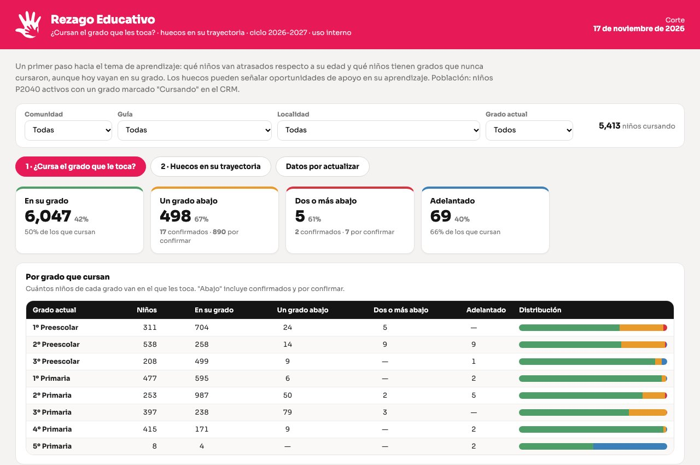
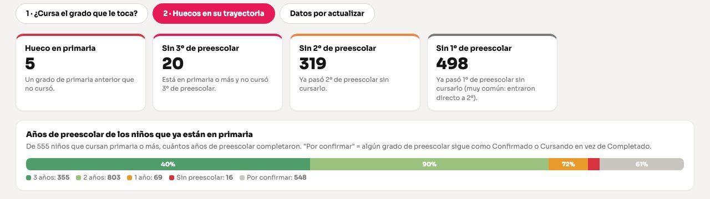

Manual de Rezago Educativo
Si cada niño cursa el grado que le toca por su edad y qué grados no cursó: cómo se calcula, qué quiere decir «por confirmar» y cómo usar las listas.
1¿Para qué sirve?
Es un primer paso hacia el tema de aprendizaje: dice qué niños van atrasados respecto a su edad y qué niños tienen grados que nunca cursaron, aunque hoy vayan en su grado. Esos huecos pueden señalar dónde hace falta apoyo.
Cuenta a los niños P2040 activos con un grado marcado «Cursando» en el CRM.
2Cómo se calcula
- Grado que le toca = edad SEP (cumplida al 31 de diciembre del año en que inició el ciclo) menos 3: con 3 años le toca 1º de preescolar; con 6, 1º de primaria.
- Confirmado: algún grado del niño se editó en el CRM desde el 1 de agosto de 2026. Por confirmar: su grado no se ha tocado este ciclo y puede no estar actualizado.
- Trayectoria: cada grado anterior al que cursa es cursado (dice Completado), hueco (dice No, Sin estudios o está vacío) o por actualizar (sigue como Confirmado, Preinscrito o Cursando: no es hueco, falta marcarlo Completado).
3Cómo moverte en el reporte
- Comunidad, Guía, Localidad y Grado actual filtran todo; a la derecha ves cuántos niños están cursando con esos filtros.
- Tres vistas: 1 · ¿Cursa el grado que le toca?, 2 · Huecos en su trayectoria y Datos por actualizar.
- Cada vista termina con la lista de niños, que puedes filtrar (todos, grado actualizado este ciclo o por confirmar) y bajar con ⬇ Excel de esta lista.
4Las tres vistas
Da clic en una vista para ver qué responde y qué mirar primero.
1 · ¿Cursa el grado que le toca?a fondo¿Cuántos niños van en su grado, atrasados o adelantados?

- Cuatro tarjetas: en su grado, un grado abajo, dos o más abajo y adelantado. En las de «abajo» se separan confirmados y por confirmar.
- Por grado que cursan: de cada grado, cuántos niños van en el que les toca y cuántos no.
- En la lista, cada niño trae el grado que cursa, el que le toca, su situación y su trayectoria grado por grado.
2 · Huecos en su trayectoriaa fondo¿Qué grados no cursaron?

- Cuántos niños tienen un hueco en primaria o no cursaron 1º, 2º o 3º de preescolar. No cursar 1º de preescolar es muy común: muchos entraron directo a 2º.
- Años de preescolar de los niños que ya están en primaria: 3, 2, 1, sin preescolar o por confirmar.
Datos por actualizar¿Qué grados hay que marcar como Completado?
Los niños con algún grado anterior que sigue como Confirmado, Preinscrito o Cursando. No son huecos: es un dato por cambiar a Completado en el CRM. Arriba ves cuántos tiene cada guía, para repartir la corrección.
5Preguntas frecuentes
Un niño sale «un grado abajo» pero sí va en su grado
Probablemente su grado no se ha actualizado este ciclo (aparece «por confirmar»). Actualiza el grado en el CRM y en el siguiente corte saldrá bien.
¿Un hueco quiere decir que el niño no aprendió algo?
No directamente: dice que no cursó ese grado según el CRM. Es una señal para revisar con la familia, no un diagnóstico de aprendizaje.
¿En qué se diferencia de Transiciones e Inscripciones?
Rezago mira el ciclo actual y la trayectoria hacia atrás; Transiciones mira el próximo ciclo y su inscripción.